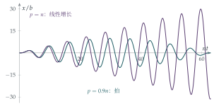

STEP II 1991，第 12 题
继续之前，请先阅读题目（原题为英文）。题目载于 STEP Support Programme 的题目资料库： step.maths.org/questions/91-s2-q12
引子
推秋千上的小孩时，只要每一下都推在恰当的时刻，轻轻的推力也会累积成大幅的摆动；节奏不对的话，就几乎毫无效果。每个振动系统都有其固有频率（natural frequency），以这个频率去驱动它，所得的反应会大得与所花的力气完全不成比例。这就是共振（resonance）。歌手能够震碎酒杯，士兵过桥时要打乱步伐，收音机能够从数以千计的电台中选出其中一个，都是这个缘故。
这道题目摇动一条弹性绳的顶端，问绳子在甚么情况下会保持拉紧。答案含有因子 \(\frac{1}{n - p}\)，当驱动频率 \(p\) 趋近固有频率 \(n\) 时，这个因子会趋于无穷大：在接近共振时，轻轻一摇已足以令绳子松弛。
动笔之前
质点悬挂在平衡位置，绳的伸长量（extension）为 \(c\)。若绳的弹性模量（modulus）为 \(\lambda\)，则 \(\lambda\)、\(a\)、\(c\)、\(m\) 与 \(g\) 之间有甚么关系？当顶端向下移动了 \(b\sin pt\)，而质点向下移动了 \(x\) 时，伸长量是多少？
在平衡状态下，张力（tension）等于重量：\(\frac{\lambda c}{a} = mg\)。当顶端向下位移 \(b\sin pt\)，而质点向下位移 \(x\) 时，绳的长度增加了 \(x - b\sin pt\)，所以伸长量是 \(c + x - b\sin pt\)。
逐步解题
阶段 1 运动方程
取向下为正，作用于质点的力有它的重量 \(mg\)，以及向上的张力 \(\frac{\lambda}{a}(c + x - b\sin pt)\)： \[m\ddot x = mg - \frac{\lambda}{a}(c + x - b\sin pt) = -\frac{\lambda}{a}(x - b\sin pt),\] 这里用了 \(\frac{\lambda c}{a} = mg\)。由于 \(\frac{\lambda}{ma} = \frac{g}{c} = n^2\)，上式即 \(\ddot x = -n^2(x - b\sin pt)\)。■
质点受到一个弹簧力，把它拉向移动中的点 \(b\sin pt\)。假如没有驱动，它会以角频率（angular frequency）\(n\) 振动，这就是它的固有频率。
阶段 2 求解
方程是 \(\ddot x + n^2x = n^2b\sin pt\)。试用 \(x = C\sin pt\) 这种形式的特解（particular solution），然后加上 \(\ddot x + n^2x = 0\) 的通解（general solution）。质点满足哪些初始条件？
代入 \(x = C\sin pt\) 得 \((-p^2 + n^2)C = n^2b\)，所以 \(C = \frac{n^2b}{n^2 - p^2}\)（这里需要 \(p \neq n\)）。余函数（complementary function）是 \(D\cos nt + E\sin nt\)。质点由平衡位置从静止开始运动：\(x(0) = 0\) 令 \(D = 0\)，而 \(\dot x(0) = 0\) 给出 \(Cp + En = 0\)，所以 \(E = -\frac{nbp}{n^2 - p^2}\)。综合起来， \[x(t) = \frac{bn}{n^2 - p^2}(n\sin pt - p\sin nt). \qed\]
阶段 3 保持拉紧
绳子拉紧，当且仅当它的伸长量为正。试把伸长量 \(c + x - b\sin pt\) 以 \(t\) 表示。
从 \(x(t)\) 减去 \(b\sin pt\)， \[\begin{aligned} x - b\sin pt &= \frac{b}{n^2 - p^2}\bigl(n^2\sin pt - np\sin nt - (n^2 - p^2)\sin pt\bigr) \\ &= \frac{bp}{n^2 - p^2}(p\sin pt - n\sin nt). \end{aligned}\] 所以绳子自始至终保持拉紧，当且仅当 \[c + \frac{bp}{n^2 - p^2}(p\sin pt - n\sin nt) \geq 0 \qquad\text{对所有 } t \geq 0.\]
\(p\sin pt - n\sin nt\) 最小可以负到甚么程度？
由于 \(|\sin| \leq 1\)，我们有 \(p\sin pt - n\sin nt \geq -(p + n)\)。所以伸长量至少是 \[c - \frac{bp(n + p)}{n^2 - p^2} = c - \frac{bp}{n - p},\] 当 \(pb < (n - p)c\) 时，这个值为正。■
当 \(p\) 趋近 \(n\) 时，这个条件会变成怎样？当 \(p = 0.9n\) 时，摇动的振幅（amplitude）\(b\) 要有多小？当 \(p = 0.99n\) 时又如何？
回顾
由平衡位置量起。利用平衡时的伸长量 \(c\)，重力便从方程中消去了。
特解加余函数。频率为 \(p\) 的受迫响应，加上频率为 \(n\) 的自由振动，其中的常数由初始条件决定。
估界，不必求解。我们没有准确求出伸长量的最小值；对正弦作一个粗略的估界，已足以得出一个充分条件（sufficient condition）。
背后的数学
共振极限
在解中令 \(p \to n\)。分子和分母都趋于零，计算极限（或使用洛必达法则（l’Hôpital’s rule），对 \(p\) 求导）可得 \[x(t) \to \frac{b}{2}(\sin nt - nt\cos nt).\] \(nt\cos nt\) 这一项会无止境地增大：恰好以固有频率驱动时，振幅随时间线性增长，每一下推动都与运动同步，为它再添一分。在略低于共振的频率下，两个频率时而同步、时而错开，产生拍（beats）：振幅以缓慢的频率 \(n - p\) 时涨时落（图 11.1.1）。两条结他弦的音高几乎调准时，听到的也是同样的拍。

阻尼与共振曲线
现实中的系统会因摩擦或空气阻力而损失能量，这就限制了振幅的增长。有阻尼（damping）时，系统对频率为 \(p\) 的驱动力的稳态响应，其振幅在固有频率附近达到峰值；峰愈尖锐，阻尼就愈小。工程师用品质因数（quality factor）\(Q\) 来描述这一点：粗略地说，它是系统在失去大部分能量之前所完成的振动次数。酒杯的 \(Q\) 数以千计，所以一个恰好等于其固有频率的持续音可以把它震碎。汽车的悬挂系统则刻意设计成 \(Q\) 值很低，以免路面颠簸令车身弹跳不止。
1831 年，一队士兵以整齐步伐操过曼彻斯特附近的布劳顿吊桥（Broughton Suspension Bridge），令桥身振动，最终倒塌；自此以后，军队过桥时都奉命打乱步伐。伦敦千禧桥（London Millennium Bridge）于 2000 年 6 月启用，人群一踏上桥，桥身便开始左右摇摆：行人不自觉地调整步伐去配合摇摆，同步地为它注入能量，结果该桥关闭了两年，以便加装阻尼器。1940 年塔科马海峡吊桥（Tacoma Narrows Bridge）那次著名的倒塌，常被说成是共振，但其实是另一种现象，即气动弹性颤振（aeroelastic flutter），当中风所施的力取决于桥本身的运动。要分析它，需要用到自激振动（self-excited oscillation）和极限环（limit cycle）的概念（第 8.4 节）。
思维技巧
对于受周期力驱动的线性方程，其解是驱动频率下的响应，加上固有频率下的自由振动，后者按初始条件选定。
这个方法之所以可行，全靠线性（linearity）：解可以相加。在大学里，同一原理应用于多个驱动频率之和，便引出傅里叶分析（Fourier analysis）、工程学中的传递函数（transfer function），以及物理学中的格林函数（Green’s function）。
延伸练习
下坠的升降机。试做 STEP II 1996，第 11 题：升降机内有一个质量系于弹性绳上，升降机先开始加速，其后停止加速。留意最终的振幅如何取决于加速持续的时间。
共振之时。试用特解 \(x = Ct\cos nt\)，直接解 \(\ddot x + n^2x = n^2b\sin nt\)，其中 \(x(0) = \dot x(0) = 0\)。验证所得结果与上文的极限一致。
拍。证明 \(n\sin pt - p\sin nt\) 可写成两项之和，而当 \(p\) 接近 \(n\) 时，其中一项近似于 \(2n\cos\frac{(n+p)t}{2}\sin\frac{(p-n)t}{2}\)。由此解释拍的周期为何是 \(\frac{2\pi}{n - p}\)。
有阻尼的共振。对于 \(\ddot x + 2k\dot x + n^2x = F\cos pt\)，其中 \(k > 0\) 且很小，求稳态振幅，并证明当 \(p^2 = n^2 - 2k^2\) 时振幅最大。
延伸阅读
A. P. French, Vibrations and Waves（MIT Introductory Physics Series）。第 4 章讲述受迫振动与共振，是这个课题的经典论述。
Steven Strogatz, Sync（Penguin）。讲述事物如何趋于同步，从萤火虫谈到千禧桥。
Henry Petroski, To Engineer Is Human（Vintage）。讲述工程上的失败个案，包括历史专栏中提到的几座桥。